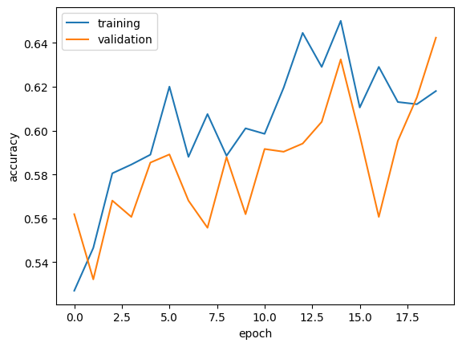

import os
import tensorflow as tf
from tensorflow import keras
from keras import utils
from keras import datasets, layers, models
import numpy as np
import matplotlib.pyplot as plt
from scipy.signal import convolve2d
# mute all tensorflow warnings
tf.compat.v1.logging.set_verbosity(tf.compat.v1.logging.ERROR)Using Tensorflow to Classify Dogs and Cats
1. Introduction
First, let’s import some important packages. We need tensorflow.keras for the ML algorithm, and its appropriate modules for other uses. We will also import some other packages like numpy, etc.
Load correct data
Now, let’s load the sample data, consisting of labeled images of dogs and cats. We run the following code to extract the data and create training, testing, and validation datasets.
# location of data
_URL = 'https://storage.googleapis.com/mledu-datasets/cats_and_dogs_filtered.zip'
# download the data and extract it
path_to_zip = utils.get_file('cats_and_dogs.zip', origin=_URL, extract=True)
# construct paths
PATH = os.path.join(os.path.dirname(path_to_zip), 'cats_and_dogs_filtered')
train_dir = os.path.join(PATH, 'train')
validation_dir = os.path.join(PATH, 'validation')
# parameters for datasets
BATCH_SIZE = 32
IMG_SIZE = (160, 160)
# construct train and validation datasets
train_dataset = utils.image_dataset_from_directory(train_dir,
shuffle=True,
batch_size=BATCH_SIZE,
image_size=IMG_SIZE)
validation_dataset = utils.image_dataset_from_directory(validation_dir,
shuffle=True,
batch_size=BATCH_SIZE,
image_size=IMG_SIZE)
# construct the test dataset by taking every 5th observation out of the validation dataset
val_batches = tf.data.experimental.cardinality(validation_dataset)
test_dataset = validation_dataset.take(val_batches // 5)
validation_dataset = validation_dataset.skip(val_batches // 5)
#create class names for the training set
class_names = train_dataset.class_namesFound 2000 files belonging to 2 classes.
Found 1000 files belonging to 2 classes.Next, the following code will help us read data with better performance:
AUTOTUNE = tf.data.AUTOTUNE
train_dataset = train_dataset.prefetch(buffer_size=AUTOTUNE)
validation_dataset = validation_dataset.prefetch(buffer_size=AUTOTUNE)
test_dataset = test_dataset.prefetch(buffer_size=AUTOTUNE)Visualize the Data
We can visualize the data via a function called visualize_data that will take in our training dataset as a parameter. We use dataset.take(1) to access the 1st batch (32 images with labels) from the dataset. We iterate through this batch and output the first 3 cat images in the 1st row, and the first 3 dog images into the 2nd row.
def visualize_data(dataset):
plt.figure(figsize=(10, 10))
for images, labels in dataset.take(1):
i = 0
cats = 1
dogs = 4
for i in range(32):
if (labels[i].numpy() == 0):
if cats <= 3:
ax = plt.subplot(3, 3, cats)
plt.imshow(images[i].numpy().astype("uint8"))
plt.title(class_names[labels[i]])
plt.axis("off")
cats += 1
i += 1
elif (labels[i].numpy() == 1):
if dogs <= 6:
ax = plt.subplot(3, 3, dogs)
plt.imshow(images[i].numpy().astype("uint8"))
plt.title(class_names[labels[i]])
plt.axis("off")
dogs += 1
i += 1
visualize_data(train_dataset)Analyzing Our Labels
Next, we will create an iterator called labels_iterator, where we will iterate through labels_iterator to see the number of cat and dog images in the training data respectively.
labels_iterator = train_dataset.unbatch().map(lambda image, label: label).as_numpy_iterator()
cats = dogs = 0
for element in labels_iterator:
if element == 0:
cats += 1
else:
dogs += 1
cats, dogs(1000, 1000)Looks like we have 1000 images of each animal in our training set. If we were to create our baseline machine learning model where the model always guesses the most frequent label, then neither cat or dog would take up the majority. Therefore, if we were to suppose that all images were labeled as dogs as the baseline machine learning model, then our model would only be 50% accurate, so we can definitely improve upon this.
2. First Simple Model
Let’s create our first model with tf.keras.Sequential using three Conv2d layers, 2 MaxPooling2D layers, 1 Flatten layer, 2 Dense layers, and 1 Dropout layer.
model1 = models.Sequential([
layers.Conv2D(32, (3, 3), activation='relu', input_shape=(160, 160, 3)),
layers.MaxPooling2D((2, 2)),
layers.Conv2D(32, (3, 3), activation='relu'),
layers.MaxPooling2D((2, 2)),
layers.Conv2D(64, (3, 3), activation='relu'),
layers.Flatten(),
layers.Dense(64, activation='relu'),
layers.Dropout(.15),
layers.Dense(2)
])Let’s look at the model’s summary:
model1.summary()Model: "sequential"
_________________________________________________________________
Layer (type) Output Shape Param #
=================================================================
conv2d (Conv2D) (None, 158, 158, 32) 896
max_pooling2d (MaxPooling2 (None, 79, 79, 32) 0
D)
conv2d_1 (Conv2D) (None, 77, 77, 32) 9248
max_pooling2d_1 (MaxPoolin (None, 38, 38, 32) 0
g2D)
conv2d_2 (Conv2D) (None, 36, 36, 64) 18496
flatten (Flatten) (None, 82944) 0
dense (Dense) (None, 64) 5308480
dropout (Dropout) (None, 64) 0
dense_1 (Dense) (None, 2) 130
=================================================================
Total params: 5337250 (20.36 MB)
Trainable params: 5337250 (20.36 MB)
Non-trainable params: 0 (0.00 Byte)
_________________________________________________________________We use 2D convolution layers with the 1st argument representing the dimensionality of the output filter, the 2nd representing the kernel size, the 3rd representing the activation method, and (for the 1st convolution), the last argument being the input shape. We use maxpooling in between the convolutions in order to create a downsampled map and help with overfitting. We use a flatten layer next to create a fully connected layer. Then, we use a dense layer to reduce the output shape and add extra parameters and then a dropout layer to once again help with overfitting. Finally, we use a final dense layer with 2 as our argument since we have 2 classes in our dataset and want our final classification to be either of these 2 classes, cat or dog.
Now, we can compile the model with our oprtimizer as adam, loss function as SparseCategoricalCrossentropy(from_logits=True), and metrics as accuracy, and then train for 20 epochs.
model1.compile(optimizer='adam',
loss = tf.keras.losses.SparseCategoricalCrossentropy(from_logits=True),
metrics = ['accuracy'])
history = model1.fit(train_dataset,
epochs=20,
validation_data=validation_dataset)Epoch 1/20
63/63 [==============================] - 5s 50ms/step - loss: 0.1232 - accuracy: 0.9655 - val_loss: 5.2037 - val_accuracy: 0.5594
Epoch 2/20
63/63 [==============================] - 4s 64ms/step - loss: 0.2014 - accuracy: 0.9575 - val_loss: 5.6181 - val_accuracy: 0.5384
Epoch 3/20
63/63 [==============================] - 3s 48ms/step - loss: 0.1085 - accuracy: 0.9725 - val_loss: 19.5345 - val_accuracy: 0.5285
Epoch 4/20
63/63 [==============================] - 3s 48ms/step - loss: 0.6302 - accuracy: 0.9120 - val_loss: 5.4655 - val_accuracy: 0.5198
Epoch 5/20
63/63 [==============================] - 5s 83ms/step - loss: 0.1631 - accuracy: 0.9505 - val_loss: 6.1352 - val_accuracy: 0.5594
Epoch 6/20
63/63 [==============================] - 3s 49ms/step - loss: 0.2192 - accuracy: 0.9420 - val_loss: 6.3172 - val_accuracy: 0.5309
Epoch 7/20
63/63 [==============================] - 3s 49ms/step - loss: 0.0533 - accuracy: 0.9800 - val_loss: 6.5065 - val_accuracy: 0.5322
Epoch 8/20
63/63 [==============================] - 6s 89ms/step - loss: 0.0424 - accuracy: 0.9825 - val_loss: 6.1610 - val_accuracy: 0.5124
Epoch 9/20
63/63 [==============================] - 4s 64ms/step - loss: 0.0355 - accuracy: 0.9865 - val_loss: 5.9597 - val_accuracy: 0.5371
Epoch 10/20
63/63 [==============================] - 6s 90ms/step - loss: 0.0958 - accuracy: 0.9830 - val_loss: 8.6715 - val_accuracy: 0.5891
Epoch 11/20
63/63 [==============================] - 4s 54ms/step - loss: 0.1063 - accuracy: 0.9785 - val_loss: 8.6982 - val_accuracy: 0.5545
Epoch 12/20
63/63 [==============================] - 3s 50ms/step - loss: 0.0850 - accuracy: 0.9830 - val_loss: 6.1948 - val_accuracy: 0.5780
Epoch 13/20
63/63 [==============================] - 6s 91ms/step - loss: 0.0229 - accuracy: 0.9940 - val_loss: 6.3688 - val_accuracy: 0.5507
Epoch 14/20
63/63 [==============================] - 3s 49ms/step - loss: 0.0403 - accuracy: 0.9895 - val_loss: 7.1590 - val_accuracy: 0.5557
Epoch 15/20
63/63 [==============================] - 3s 50ms/step - loss: 0.0757 - accuracy: 0.9845 - val_loss: 7.1530 - val_accuracy: 0.5495
Epoch 16/20
63/63 [==============================] - 6s 98ms/step - loss: 0.2257 - accuracy: 0.9705 - val_loss: 6.2619 - val_accuracy: 0.5359
Epoch 17/20
63/63 [==============================] - 7s 100ms/step - loss: 0.0761 - accuracy: 0.9825 - val_loss: 5.4714 - val_accuracy: 0.5408
Epoch 18/20
63/63 [==============================] - 8s 110ms/step - loss: 0.0295 - accuracy: 0.9895 - val_loss: 6.9426 - val_accuracy: 0.5248
Epoch 19/20
63/63 [==============================] - 4s 53ms/step - loss: 0.0147 - accuracy: 0.9970 - val_loss: 6.0135 - val_accuracy: 0.5532
Epoch 20/20
63/63 [==============================] - 6s 86ms/step - loss: 0.0170 - accuracy: 0.9960 - val_loss: 6.9712 - val_accuracy: 0.5446Next, let’s plot the accuracy of the training and validation sets across the 20 epochs.
plt.plot(history.history["accuracy"], label = "training")
plt.plot(history.history["val_accuracy"], label = "validation")
plt.gca().set(xlabel = "epoch", ylabel = "accuracy")
plt.legend()<matplotlib.legend.Legend at 0x789198bf94e0>Model 1 Comments
- I experimented with the parameter for the Dropout layer. After a couple of tests, value of .15 gave me the best accuracies
- The accuracy of the model stabilized between around 53% and 59%
- Compared with baseline of 50%, this model definitely did better, but around 60% accuracy still isn’t ideal
- There is a huge overfitting issue on Model 1. In the graph, the accuracy on the training data jumps much higher than the accuracy on the validation data, so the model is clearly fitting far too close to the training data.
3. Second Model (Data Augmentation Layers)
Now, we will explore data augmentation with RandomFlip and RandomRotation, which will flip and rotate some of the images. Our goal is to have our model learn to recognize these images as ones that are just transformed versions of the original images.
First, let’s create our 2 layers, each holding RandomFlip and RandomRotation respectively, and then we create another layer that combines the 2 so that we can use it for the model later.
random_flip = tf.keras.Sequential([
tf.keras.layers.RandomFlip('horizontal', input_shape=(160,160,3))
])
random_rotation = tf.keras.Sequential([
tf.keras.layers.RandomRotation(0.2, input_shape=(160,160,3))
])
data_augmentation = tf.keras.Sequential([
tf.keras.layers.RandomFlip('horizontal', input_shape=(160,160,3)),
tf.keras.layers.RandomRotation(0.2),
])Now, we can take in the 1st random image in the training dataset batch and apply random_flip and random_rotation separately. We should expect 2 plots with 6 images each.
for image, _ in train_dataset.take(1):
plt.figure(figsize=(10, 10))
first_image = image[0]
for i in range(6):
ax = plt.subplot(3, 3, i + 1)
augmented_image = random_flip(tf.expand_dims(first_image, 0))
plt.imshow(augmented_image[0] / 255)
plt.axis('off')
for image, _ in train_dataset.take(1):
plt.figure(figsize=(10, 10))
first_image = image[0]
for i in range(6):
ax = plt.subplot(3, 3, i + 1)
augmented_image = random_rotation(tf.expand_dims(first_image, 0))
plt.imshow(augmented_image[0] / 255)
plt.axis('off')In the first plots, the layer Randomflip flipped the image horizontally as we specified. In the second plots, the layer RandomRotation was able to rotate the image by a certain amount. So, we are now ready to build our revised model!
model2 = models.Sequential([
data_augmentation,
layers.Conv2D(32, (3, 3), activation='relu'),
layers.MaxPooling2D((2, 2)),
layers.Conv2D(32, (3, 3), activation='relu'),
layers.MaxPooling2D((2, 2)),
layers.Conv2D(64, (3, 3), activation='relu'),
layers.Flatten(),
layers.Dropout(.15),
layers.Dense(64, activation='relu'),
layers.Dense(2)
])Again, let’s look at this model’s summary:
model2.summary()Model: "sequential_8"
_________________________________________________________________
Layer (type) Output Shape Param #
=================================================================
sequential_7 (Sequential) (None, 160, 160, 3) 0
conv2d_6 (Conv2D) (None, 158, 158, 32) 896
max_pooling2d_4 (MaxPoolin (None, 79, 79, 32) 0
g2D)
conv2d_7 (Conv2D) (None, 77, 77, 32) 9248
max_pooling2d_5 (MaxPoolin (None, 38, 38, 32) 0
g2D)
conv2d_8 (Conv2D) (None, 36, 36, 64) 18496
flatten_2 (Flatten) (None, 82944) 0
dropout_2 (Dropout) (None, 82944) 0
dense_4 (Dense) (None, 64) 5308480
dense_5 (Dense) (None, 2) 130
=================================================================
Total params: 5337250 (20.36 MB)
Trainable params: 5337250 (20.36 MB)
Non-trainable params: 0 (0.00 Byte)
_________________________________________________________________Now, we can train the model:
model2.compile(optimizer='adam',
loss = tf.keras.losses.SparseCategoricalCrossentropy(from_logits=True),
metrics = ['accuracy'])
history = model2.fit(train_dataset,
epochs=20,
validation_data=validation_dataset)Epoch 1/20
63/63 [==============================] - 7s 81ms/step - loss: 42.2194 - accuracy: 0.5270 - val_loss: 0.6964 - val_accuracy: 0.5619
Epoch 2/20
63/63 [==============================] - 3s 50ms/step - loss: 0.7003 - accuracy: 0.5465 - val_loss: 0.6918 - val_accuracy: 0.5322
Epoch 3/20
63/63 [==============================] - 3s 49ms/step - loss: 0.6848 - accuracy: 0.5805 - val_loss: 0.6885 - val_accuracy: 0.5681
Epoch 4/20
63/63 [==============================] - 4s 55ms/step - loss: 0.6783 - accuracy: 0.5845 - val_loss: 0.6998 - val_accuracy: 0.5606
Epoch 5/20
63/63 [==============================] - 4s 52ms/step - loss: 0.6701 - accuracy: 0.5890 - val_loss: 0.7419 - val_accuracy: 0.5854
Epoch 6/20
63/63 [==============================] - 3s 50ms/step - loss: 0.6710 - accuracy: 0.6200 - val_loss: 0.6930 - val_accuracy: 0.5891
Epoch 7/20
63/63 [==============================] - 3s 50ms/step - loss: 0.6723 - accuracy: 0.5880 - val_loss: 0.6931 - val_accuracy: 0.5681
Epoch 8/20
63/63 [==============================] - 5s 80ms/step - loss: 0.6805 - accuracy: 0.6075 - val_loss: 0.7302 - val_accuracy: 0.5557
Epoch 9/20
63/63 [==============================] - 3s 49ms/step - loss: 0.6710 - accuracy: 0.5885 - val_loss: 0.6936 - val_accuracy: 0.5879
Epoch 10/20
63/63 [==============================] - 4s 56ms/step - loss: 0.6638 - accuracy: 0.6010 - val_loss: 0.6969 - val_accuracy: 0.5619
Epoch 11/20
63/63 [==============================] - 5s 77ms/step - loss: 0.6748 - accuracy: 0.5985 - val_loss: 0.6815 - val_accuracy: 0.5916
Epoch 12/20
63/63 [==============================] - 5s 76ms/step - loss: 0.6640 - accuracy: 0.6195 - val_loss: 0.7009 - val_accuracy: 0.5903
Epoch 13/20
63/63 [==============================] - 4s 66ms/step - loss: 0.6388 - accuracy: 0.6445 - val_loss: 0.6898 - val_accuracy: 0.5941
Epoch 14/20
63/63 [==============================] - 6s 94ms/step - loss: 0.6449 - accuracy: 0.6290 - val_loss: 0.6766 - val_accuracy: 0.6040
Epoch 15/20
63/63 [==============================] - 3s 52ms/step - loss: 0.6379 - accuracy: 0.6500 - val_loss: 0.6782 - val_accuracy: 0.6324
Epoch 16/20
63/63 [==============================] - 8s 114ms/step - loss: 0.6615 - accuracy: 0.6105 - val_loss: 0.6720 - val_accuracy: 0.5978
Epoch 17/20
63/63 [==============================] - 4s 54ms/step - loss: 0.6500 - accuracy: 0.6290 - val_loss: 0.6831 - val_accuracy: 0.5606
Epoch 18/20
63/63 [==============================] - 3s 49ms/step - loss: 0.6553 - accuracy: 0.6130 - val_loss: 0.6682 - val_accuracy: 0.5953
Epoch 19/20
63/63 [==============================] - 5s 74ms/step - loss: 0.6483 - accuracy: 0.6120 - val_loss: 0.6594 - val_accuracy: 0.6151
Epoch 20/20
63/63 [==============================] - 4s 51ms/step - loss: 0.6496 - accuracy: 0.6180 - val_loss: 0.6575 - val_accuracy: 0.6423Now, let’s plot and take a look at what’s going on with our new model!
plt.plot(history.history["accuracy"], label = "training")
plt.plot(history.history["val_accuracy"], label = "validation")
plt.gca().set(xlabel = "epoch", ylabel = "accuracy")
plt.legend()<matplotlib.legend.Legend at 0x7891989ffa60>
4. Third Model (Data Preprocessing)
Let’s now add data preprocessing, such as scaling the RGB code down into something easier to compute. We will create a preprocessor layer in which we can insert into the beginning of our model:
i = tf.keras.Input(shape=(160, 160, 3))
x = tf.keras.applications.mobilenet_v2.preprocess_input(i)
preprocessor = tf.keras.Model(inputs = [i], outputs = [x])Now, here is our model3 with the preprocessor layer:
model3 = models.Sequential([
preprocessor,
data_augmentation,
layers.Conv2D(32, (3, 3), activation='relu'),
layers.MaxPooling2D((2, 2)),
layers.Conv2D(32, (3, 3), activation='relu'),
layers.MaxPooling2D((2, 2)),
layers.Conv2D(64, (3, 3), activation='relu'),
layers.Flatten(),
layers.Dropout(.15),
layers.Dense(64, activation='relu'),
layers.Dense(2)
])Let’s look at the summary:
model3.summary()Model: "sequential_9"
_________________________________________________________________
Layer (type) Output Shape Param #
=================================================================
model (Functional) (None, 160, 160, 3) 0
sequential_7 (Sequential) (None, 160, 160, 3) 0
conv2d_9 (Conv2D) (None, 158, 158, 32) 896
max_pooling2d_6 (MaxPoolin (None, 79, 79, 32) 0
g2D)
conv2d_10 (Conv2D) (None, 77, 77, 32) 9248
max_pooling2d_7 (MaxPoolin (None, 38, 38, 32) 0
g2D)
conv2d_11 (Conv2D) (None, 36, 36, 64) 18496
flatten_3 (Flatten) (None, 82944) 0
dropout_3 (Dropout) (None, 82944) 0
dense_6 (Dense) (None, 64) 5308480
dense_7 (Dense) (None, 2) 130
=================================================================
Total params: 5337250 (20.36 MB)
Trainable params: 5337250 (20.36 MB)
Non-trainable params: 0 (0.00 Byte)
_________________________________________________________________Now, we train:
model3.compile(optimizer='adam',
loss = tf.keras.losses.SparseCategoricalCrossentropy(from_logits=True),
metrics = ['accuracy'])
history = model3.fit(train_dataset,
epochs=20,
validation_data=validation_dataset)Epoch 1/20
63/63 [==============================] - 5s 51ms/step - loss: 0.7249 - accuracy: 0.5135 - val_loss: 0.6747 - val_accuracy: 0.6077
Epoch 2/20
63/63 [==============================] - 4s 56ms/step - loss: 0.6822 - accuracy: 0.5450 - val_loss: 0.6496 - val_accuracy: 0.6064
Epoch 3/20
63/63 [==============================] - 6s 93ms/step - loss: 0.6552 - accuracy: 0.5920 - val_loss: 0.6458 - val_accuracy: 0.6015
Epoch 4/20
63/63 [==============================] - 4s 60ms/step - loss: 0.6514 - accuracy: 0.6090 - val_loss: 0.6421 - val_accuracy: 0.6089
Epoch 5/20
63/63 [==============================] - 4s 55ms/step - loss: 0.6239 - accuracy: 0.6325 - val_loss: 0.6306 - val_accuracy: 0.6312
Epoch 6/20
63/63 [==============================] - 5s 81ms/step - loss: 0.6232 - accuracy: 0.6295 - val_loss: 0.6321 - val_accuracy: 0.6300
Epoch 7/20
63/63 [==============================] - 4s 55ms/step - loss: 0.5992 - accuracy: 0.6655 - val_loss: 0.5764 - val_accuracy: 0.6894
Epoch 8/20
63/63 [==============================] - 3s 52ms/step - loss: 0.5784 - accuracy: 0.6845 - val_loss: 0.5719 - val_accuracy: 0.7067
Epoch 9/20
63/63 [==============================] - 4s 59ms/step - loss: 0.5650 - accuracy: 0.7045 - val_loss: 0.6074 - val_accuracy: 0.6881
Epoch 10/20
63/63 [==============================] - 4s 50ms/step - loss: 0.5756 - accuracy: 0.6765 - val_loss: 0.5964 - val_accuracy: 0.6894
Epoch 11/20
63/63 [==============================] - 3s 50ms/step - loss: 0.5749 - accuracy: 0.7090 - val_loss: 0.5830 - val_accuracy: 0.6869
Epoch 12/20
63/63 [==============================] - 3s 49ms/step - loss: 0.5605 - accuracy: 0.7095 - val_loss: 0.5721 - val_accuracy: 0.7079
Epoch 13/20
63/63 [==============================] - 5s 82ms/step - loss: 0.5530 - accuracy: 0.7140 - val_loss: 0.5847 - val_accuracy: 0.7104
Epoch 14/20
63/63 [==============================] - 3s 50ms/step - loss: 0.5259 - accuracy: 0.7300 - val_loss: 0.5579 - val_accuracy: 0.7302
Epoch 15/20
63/63 [==============================] - 3s 50ms/step - loss: 0.5197 - accuracy: 0.7360 - val_loss: 0.5724 - val_accuracy: 0.7153
Epoch 16/20
63/63 [==============================] - 5s 77ms/step - loss: 0.5291 - accuracy: 0.7205 - val_loss: 0.5371 - val_accuracy: 0.7438
Epoch 17/20
63/63 [==============================] - 4s 55ms/step - loss: 0.5091 - accuracy: 0.7425 - val_loss: 0.5750 - val_accuracy: 0.7153
Epoch 18/20
63/63 [==============================] - 3s 50ms/step - loss: 0.5117 - accuracy: 0.7535 - val_loss: 0.5457 - val_accuracy: 0.7067
Epoch 19/20
63/63 [==============================] - 3s 51ms/step - loss: 0.4971 - accuracy: 0.7445 - val_loss: 0.5256 - val_accuracy: 0.7376
Epoch 20/20
63/63 [==============================] - 5s 76ms/step - loss: 0.4775 - accuracy: 0.7630 - val_loss: 0.5483 - val_accuracy: 0.7413Taking a look at the graph:
plt.plot(history.history["accuracy"], label = "training")
plt.plot(history.history["val_accuracy"], label = "validation")
plt.gca().set(xlabel = "epoch", ylabel = "accuracy")
plt.legend()<matplotlib.legend.Legend at 0x78921010e770>Comments on Model 3:
- The accuracy of my model stabilized between 70% and 75%.
- This result is slightly better than
model2, so we are improving! - Huge fix with this revised model is that we have less overfitting for sure. The validation accuracy is nearly aligned with the training accuracy.
5. Last Model (Transfer Learning)
In this final model, we will use a pre-existing model that somebody else has created and incorporate it into a full model for our task. The following code is from a base cmodel from MobileNetV2 that we will use to see if it improves our model!
IMG_SHAPE = IMG_SIZE + (3,)
base_model = tf.keras.applications.MobileNetV2(input_shape=IMG_SHAPE,
include_top=False,
weights='imagenet')
base_model.trainable = False
i = tf.keras.Input(shape=IMG_SHAPE)
x = base_model(i, training = False)
base_model_layer = tf.keras.Model(inputs = [i], outputs = [x])Downloading data from https://storage.googleapis.com/tensorflow/keras-applications/mobilenet_v2/mobilenet_v2_weights_tf_dim_ordering_tf_kernels_1.0_160_no_top.h5
9406464/9406464 [==============================] - 1s 0us/stepAfter adding base_model_layer, we now do the same process:
model4 = models.Sequential([
preprocessor,
data_augmentation,
base_model_layer,
layers.GlobalMaxPooling2D(),
layers.Dropout(.2),
layers.Dense(2)
])Summary:
model4.summary()Model: "sequential_10"
_________________________________________________________________
Layer (type) Output Shape Param #
=================================================================
model (Functional) (None, 160, 160, 3) 0
sequential_7 (Sequential) (None, 160, 160, 3) 0
model_1 (Functional) (None, 5, 5, 1280) 2257984
global_max_pooling2d (Glob (None, 1280) 0
alMaxPooling2D)
dropout_4 (Dropout) (None, 1280) 0
dense_8 (Dense) (None, 2) 2562
=================================================================
Total params: 2260546 (8.62 MB)
Trainable params: 2562 (10.01 KB)
Non-trainable params: 2257984 (8.61 MB)
_________________________________________________________________From the summary, we can see that we have 2257984 parameters to train for the base_model_layer!
Training:
model4.compile(optimizer='adam',
loss = tf.keras.losses.SparseCategoricalCrossentropy(from_logits=True),
metrics = ['accuracy'])
history = model4.fit(train_dataset,
epochs=20,
validation_data=validation_dataset)Epoch 1/20
63/63 [==============================] - 8s 68ms/step - loss: 0.1827 - accuracy: 0.9495 - val_loss: 0.0608 - val_accuracy: 0.9802
Epoch 2/20
63/63 [==============================] - 6s 86ms/step - loss: 0.1705 - accuracy: 0.9565 - val_loss: 0.0893 - val_accuracy: 0.9752
Epoch 3/20
63/63 [==============================] - 4s 58ms/step - loss: 0.1815 - accuracy: 0.9490 - val_loss: 0.0665 - val_accuracy: 0.9777
Epoch 4/20
63/63 [==============================] - 5s 84ms/step - loss: 0.1668 - accuracy: 0.9490 - val_loss: 0.0722 - val_accuracy: 0.9827
Epoch 5/20
63/63 [==============================] - 4s 54ms/step - loss: 0.1477 - accuracy: 0.9500 - val_loss: 0.0685 - val_accuracy: 0.9802
Epoch 6/20
63/63 [==============================] - 4s 56ms/step - loss: 0.2211 - accuracy: 0.9440 - val_loss: 0.0679 - val_accuracy: 0.9827
Epoch 7/20
63/63 [==============================] - 5s 84ms/step - loss: 0.2229 - accuracy: 0.9450 - val_loss: 0.0966 - val_accuracy: 0.9728
Epoch 8/20
63/63 [==============================] - 4s 55ms/step - loss: 0.2209 - accuracy: 0.9475 - val_loss: 0.0654 - val_accuracy: 0.9790
Epoch 9/20
63/63 [==============================] - 4s 55ms/step - loss: 0.2068 - accuracy: 0.9445 - val_loss: 0.1565 - val_accuracy: 0.9629
Epoch 10/20
63/63 [==============================] - 5s 83ms/step - loss: 0.1718 - accuracy: 0.9550 - val_loss: 0.0715 - val_accuracy: 0.9790
Epoch 11/20
63/63 [==============================] - 4s 54ms/step - loss: 0.2201 - accuracy: 0.9465 - val_loss: 0.0729 - val_accuracy: 0.9802
Epoch 12/20
63/63 [==============================] - 4s 56ms/step - loss: 0.1931 - accuracy: 0.9480 - val_loss: 0.0639 - val_accuracy: 0.9827
Epoch 13/20
63/63 [==============================] - 5s 78ms/step - loss: 0.1726 - accuracy: 0.9550 - val_loss: 0.0722 - val_accuracy: 0.9790
Epoch 14/20
63/63 [==============================] - 4s 55ms/step - loss: 0.1682 - accuracy: 0.9500 - val_loss: 0.0582 - val_accuracy: 0.9839
Epoch 15/20
63/63 [==============================] - 4s 56ms/step - loss: 0.1141 - accuracy: 0.9610 - val_loss: 0.0696 - val_accuracy: 0.9827
Epoch 16/20
63/63 [==============================] - 4s 67ms/step - loss: 0.1543 - accuracy: 0.9610 - val_loss: 0.0549 - val_accuracy: 0.9839
Epoch 17/20
63/63 [==============================] - 5s 68ms/step - loss: 0.1380 - accuracy: 0.9590 - val_loss: 0.0560 - val_accuracy: 0.9839
Epoch 18/20
63/63 [==============================] - 4s 56ms/step - loss: 0.2115 - accuracy: 0.9465 - val_loss: 0.0724 - val_accuracy: 0.9827
Epoch 19/20
63/63 [==============================] - 4s 56ms/step - loss: 0.1376 - accuracy: 0.9585 - val_loss: 0.0737 - val_accuracy: 0.9802
Epoch 20/20
63/63 [==============================] - 6s 91ms/step - loss: 0.2048 - accuracy: 0.9480 - val_loss: 0.0582 - val_accuracy: 0.9777Graph:
plt.plot(history.history["accuracy"], label = "training")
plt.plot(history.history["val_accuracy"], label = "validation")
plt.gca().set(xlabel = "epoch", ylabel = "accuracy")
plt.legend()<matplotlib.legend.Legend at 0x789194daa710>Comments on Model 4:
- The accuracy of my model stabilized between 96% and 99%
- This accuracy is far greater than
model1and any of my other models - No overfitting issues seem to be present!
6. Evaluating Testing Data Using Best Model
Moment of truth, let’s use our most recent and best model to evaluate it on testing data!
model4.evaluate(test_dataset, verbose=1)6/6 [==============================] - 0s 39ms/step - loss: 0.0788 - accuracy: 0.9844[0.0787581279873848, 0.984375]Our accuracy is 98.4%, which is pretty good!
Comments on Model 2:
model1.model1. We want to avoid as much of this as possible though however.